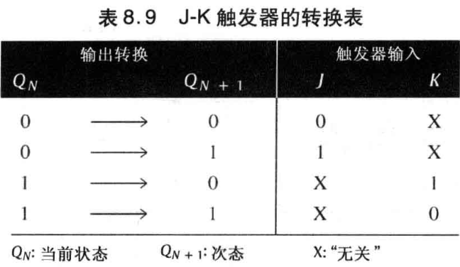

时序逻辑电路
基础元件¶
555 Timer¶
可能会考哦
mono-stable one-shot (单稳态触发器)
 非稳态延续时间：
非稳态延续时间：
\[
t_w=1.1R_1C_1
\]
astable multi-vibration oscillator (非稳态多谐振荡器)

\[
t_H=0.7R_1C_1\\
t_L=1.4R_2C_1
\]
频率：
\[
f=\frac{1.44}{(R_1+2R_2)C_1}\\
\]
占空比（Duty Cycle）\(DC\)（非空/周期）：
\[
DC=\big(\frac{R_1+R_2}{R_1+2R_2}\big)100\%
\]
上述公式中 \(DC\gt\frac{1}{2}\)，若要设计 50% 占空比的振荡器，如下图所示：
\[
t_H=0.7R_1C_1\\
t_L=0.7R_2C_1
\]

S-R 触发器¶
\[
Q^{n+1}=S+\overline{R}Q^{n}
\]
D 触发器¶
\[
Q'=D
\]
\(GATE\) 高电平有效使能：
\[
Q^{n+1}=GATE\cdot D+\overline{GATE}\cdot Q^{n}
\]
 J-K 触发器¶
J-K 触发器¶
\[
Q^{n+1}=J\overline{Q^{n}}+Q^{n}\overline{K}
\]

设计¶
思路一¶
- State Diagram 状态转移图
- 有多少状态决定使用多少触发器，\(n\) 个状态应使用 \(\lceil\log_2n\rceil\)
- Next-State Table 次态表（状态转移表）
- Flip-Flop Transition Table 触发器转换表，由触发器特性方程决定
- Karnaugh Maps 根据次态表、触发器转换表画出卡诺图
- Locgi Expressions for Flip-Flop Inputs 根据卡诺图化简得到逻辑表达式
- Counter Implementation 根据逻辑表达式设计逻辑电路
思路二¶
每一个输入也要视为一个状态位（类似于 \(Q\) ）来画卡诺图
卡诺图每一个格子内容为：
\[
Q^{n+1}_3Q^{n+1}_2Q^{n+1}_1Q^{n+1}_0/C
\]
对于不可能的情况，也就是无关项，那么 5 个值统一为 X ，也就是：\(XXXX/X\)。
将内容拆开，则对应地画出 5 个卡诺图，然后分别化简，则能够得到：
- 4 个状态 (转移) 方程
- 1 个状态输出方程
再根据选定的触发器的特性方程，则可以写出各个触发器的各个输入的驱动方程以及输出方程
在一些芯片上，计数使能被简单地标记为 CTEN (或者一些诸如 G 之类的其他名称)， 终端计数 (TC) 和一些 IC 计数器上的异步 (行波) 时钟输出 (RCO) 比较相似
一些计数器：
- 74HC161 十六进制计数器
- 74HC190 十进制计数器